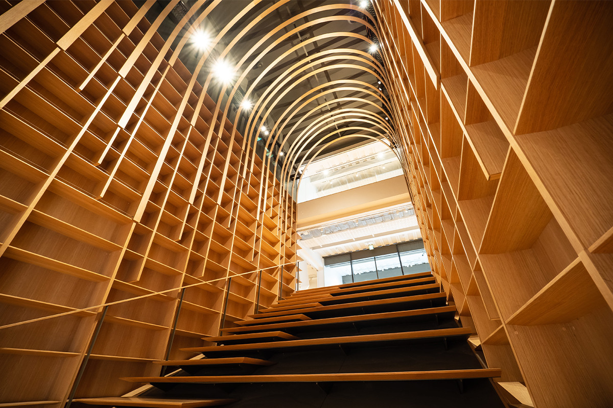
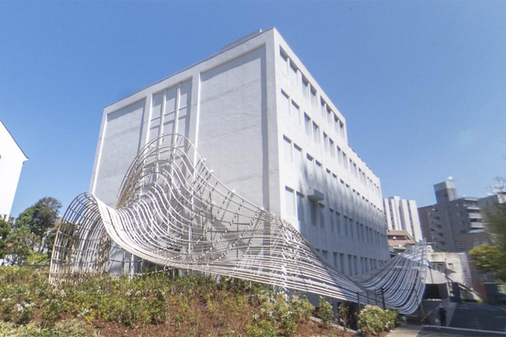
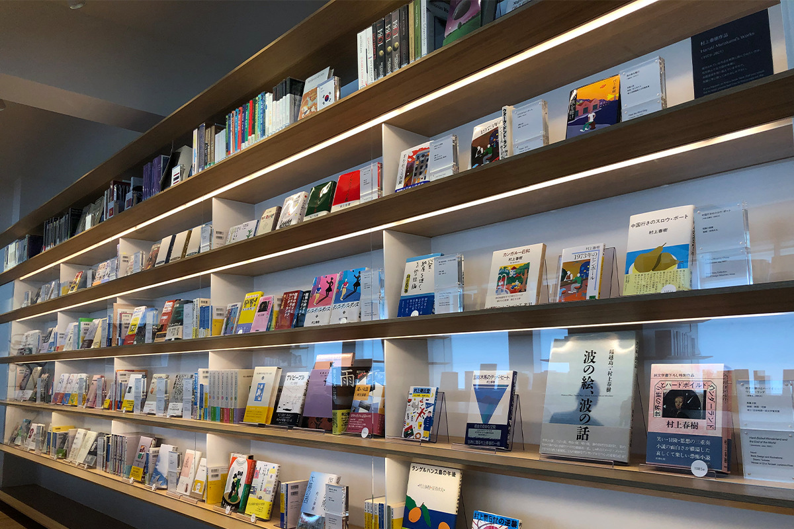
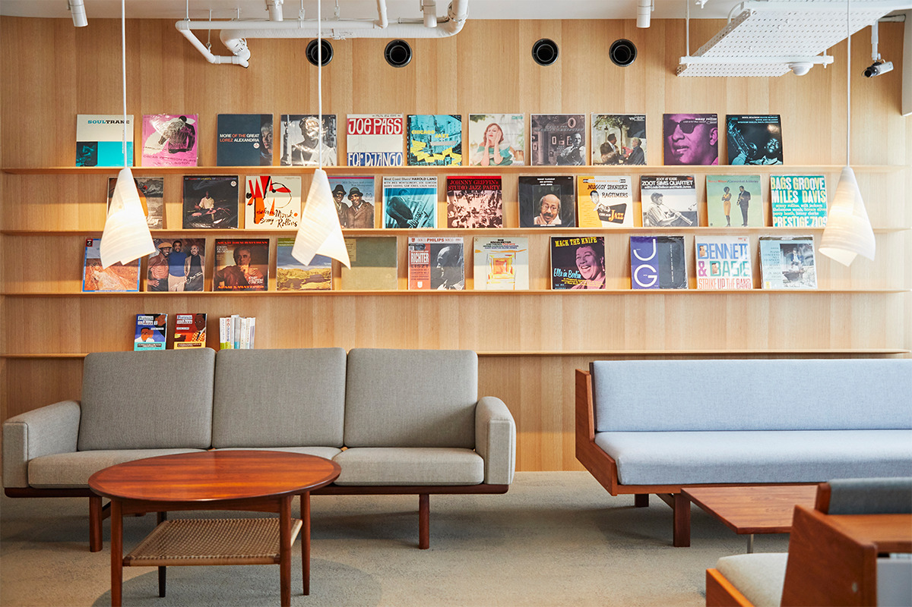
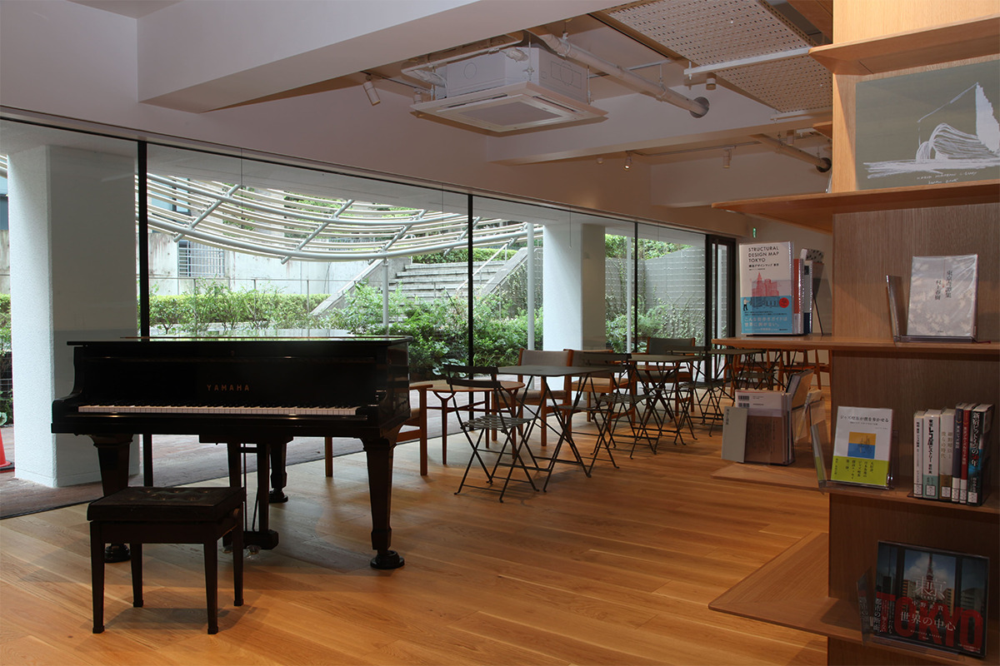

Токио · Васэда · библиотека
Библиотека Харуки Мураками: деревянные полки и арки Кэнго Кумы в университете Васэда

Осенью 2021 года в кампусе университета Васэда открылся литературный дом, названный в честь Харуки Мураками. Кэнго Кума перестроил старый учебный корпус, и внутри всё из дерева, от полок до арок потолка, а внутри собраны книги писателя на десятках языков и его пластинки.
Здание
Рядом с музеем, куда ходил студент Мураками
Международный литературный дом университета Васэда, который называют также библиотекой Харуки Мураками, открылся 1 октября 2021 года. Писатель учился в Васэде на театральном отделении и в студенческие годы постоянно бывал в университетском Театральном музее. Библиотеку устроили в соседнем старом корпусе № 4, который ради неё основательно перестроили.
Проект сделал архитектор Кэнго Кума. Полки, лестница и арки потолка здесь из дерева, и открытое пространство наполнено теплом дерева. В здании пять этажей и ещё один подземный; на третьем этаже хранилище для исследователей.

Первый этаж
Галерея книг и «Человек-овца»
В галерее-гостиной на первом этаже выставлены прежде всего первые издания книг Мураками, от дебюта 1979 года до 2021 года. На книжных полках у противоположной стены стоят его книги, изданные в Японии, и переводы на самые разные языки мира: всего произведения писателя переведены больше чем на 50 языков. Среди них, конечно, и «Норвежский лес». Для долгого чтения здесь поставили кресла-коконы, и вообще всё устроено так, чтобы хотелось задержаться.

Главная деталь зала это напечатанный на стене «Человек-овца», персонаж романа «Охота на овец» (1982) из ранней трилогии писателя. Его нарисовал сам Мураками: обложки его книг оформляли многие художники, но и сам он, говорят, любит рисовать. Перед рисунком стоят три стула из Peter Cat, джаз-кафе, которое Мураками когда-то держал сам. Стулья редкие, но сидеть на них можно, и сидеть удобно.
Музыка
Аудиокомната и пластинки с котом
На первом этаже есть и аудиокомната, где слушают музыку, которую советует Мураками. Аудиосистему подбирали так, чтобы передать суть звука, который звучит в комнате самого писателя, и звук здесь действительно очень хорош.

На части выставленных пластинок стоит штамп с котом. Это пластинки, которые стояли в Peter Cat. Свою коллекцию, которую он собирал много лет, Мураками передаёт библиотеке, и в 2021 году было известно, что её будут пополнять и дальше.
На втором этаже зал временных выставок, а для студентов лаборатория и студия, разделённые стеклом: звук из студии можно вывести на динамики лаборатории. Оборудование студии настолько серьёзное, что на нём можно делать настоящие радиопередачи.
Подвал
Гостиная, кафе и лестница из книг
Подвальный этаж открыт для всех, и смотреть здесь есть на что: мебель и пианино, связанные с Мураками, декорации из спектаклей по его произведениям. Там же кафе Orange Cat. Через маленький садик можно выйти прямо на улицу, а посадки в нём меняют цвет по сезонам. Ступени лестницы-шкафа служат и местами для зрителей: на них задумывали проводить встречи и семинары.

Лестница-шкаф ведёт на первый этаж, и это символ литературного дома. На полках справа, если смотреть снизу, собраны книги на тему «Произведения Мураками и их узлы». Отправные точки для подборки взяли из ключевых слов его прозы: «кинотеатр», «существа под водой», «человек и искусственный интеллект». Полки напротив посвящены теме «Мировая литература, которую стоит передать из настоящего в будущее». Книги для них выбирали писатели, переводчики и режиссёры, снимавшие фильмы по Мураками, каждый по своему представлению о мировой литературе. Любую книгу можно взять и читать в гостиной или прямо на ступенях.
Для тех, кто любит Мураками, это место, где можно провести целый день в его мире. В 2021 году, когда библиотека открылась, вход был по предварительной записи. По сайту библиотеки на 2026 год, записываться заранее не нужно (кроме групп от 21 человека), а вход бесплатный.
Международный литературный дом Васэда (библиотека Харуки Мураками)
- Адрес
- Токио, Синдзюку, Ниси-Васэда, 1-6-1, кампус Васэда университета Васэда
- Часы работы
- 10:00–17:00
- Выходные
- среда
- Цены / Вход
- бесплатно, без записи; группам от 21 человека нужна запись (2026 год)